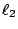

．作者任教於香港科技大學數學系
二、平行性與定量平面幾何基礎理論
項武義
|
|
．作者任教於香港科技大學數學系 | ||
|
二、平行性與定量平面幾何基礎理論
項武義 |
|
一般來說，我們對于事物的研究，大體上都先作定性的探討，然後再進而作定量的分析。這是一種由表及裡、逐步深入、精益求精的自然進展，平面幾何學的研究當然也遵循著這樣一種自然的順理成章的途徑。由上一章的討論中可以看到，在定性地探討幾何中的「等」與「不等」時，我們可以完全不用平行性；但是在定量的平面幾何中，我們要對于不等長的兩個線段，不同大小的兩個角區或不同大小的兩個區域，賦以兩者之間定量的比值去度量 (measure) 兩者之間的差別。在這個時候，平行性扮演著一個舉足輕重的「要角」，其作用是大大簡化了定量幾何的基礎理論和基本公式。換句話說，在定量幾何中，三角形內角和是恆等于平角還是恆小于平角這兩種幾何開始有了重大的差別。前者的基本公式要比後者的基本公式簡單得多！在前者有簡樸易用的基本定理如矩形面積公式、勾股定理和相似三角形定理；而在後者所相應者，不是根本沒有，就是要複雜得多。 在本章中，我們將會簡明扼要地討論平行性如何反映在平面幾何的基本定理之上。再者，我們還會比較分析一下古代中國和古希臘對于定量平面幾何的治學方法。
在歐幾里德 (Euclid) 的原著《幾何原本》 (``Elements'') 中，平面的平行性是用下述第五公設 (fifth postulate)，也就是我們通常稱之為平行公理 (parallel axiom) 者，來加以刻劃的：
【第五公設】：設 ,  和
[ 圖 2-1 ]
亦即
另一方面，在上一章中我們只需用到 S.A.S. 和「兩點定唯一直線」就可以証明下述 [定理 1.5]：
【定理 1.5】：若
，則 , 不相交。
[ 圖 1-8' ]
由此可見，上述的第五公設也就是以「公設」的方式宣稱
是 ,
不相交的唯一可能性。換句話說，在平面上過直線
外的一個給定點 P，而且和 不相交的直線
的存在性乃是已証的[定理 1.5]，而其唯一性則就是上述第五公設，亦即是使得同傍內角之和
的那一條
乃是唯一和 不相交者。用這個唯一性之所設，就不難推導平直性：三角形內角和恆為一平角（其証明留作習題）。其實，反之亦可用平直性來証明上述第五公設，其証法如下：
[ 圖 2-2 ]
証明：
如 [圖 2-2] 所示， 是使得同位角
者，由所設
。令
是在 亦即 都是等腰三角形。由平直性和等腰三角形的底角相等，即有 和 之間的夾角逐次減半。所以在 n 足夠大時，其值小于 ，亦即當 時， 業已夾在 [注意，上述証明之中，三角形內角和恆等于一個平角扮演著必不可缺的角色！所以上述論証只是証明了第五公設和平直性的邏輯等價性。]
|
對外搜尋關鍵字： ．歐幾里得 ．幾何原本 ．比值 ．可公度 ．Hippasus ．歐氏算法 ．不可公度的 ．Eudoxus ．逼近法 ．Menelous定理 ．Ceva定理 ．平行 |
|
|
|
|
（若有指正、疑問……，可以在此 留言 或 寫信 給我們。） |
|
|
|
EpisteMath (c) 2000 中央研究院數學所、台大數學系 各網頁文章內容之著作權為原著作人所有 |
| 最後修改日期：6/19/2004 |